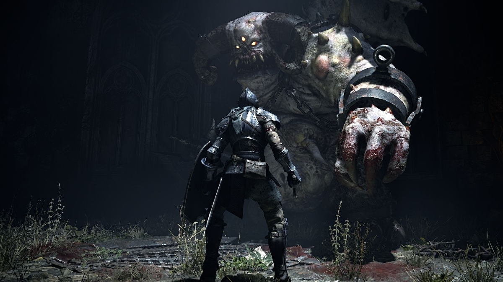

El resurgir de un tesoro
Con la fama que ha ido obteniendo la saga souls con el creciente numero de seguidores que han ido aumentando exponencialmente con cada entrega, han traido el remasterd de sus orígenes, "Demon's Souls", el cual ha llegado a PS5 el 12 de Noviembre.

Con un millon de copias, esta enterga te va a poner en máxima tensión pues es un desafio a la altura de los más determinados con nervios de acero y reacción de lince.
⚔️💀⚔️ pic.twitter.com/CQy3FOx1HZ
— Demon's Souls PS5 (@SaveDemonsSouls) September 30, 2021
⚔️💀⚔️ pic.twitter.com/CQy3FOx1HZ
— Demon's Souls PS5 (@SaveDemonsSouls) September 30, 2021Su historia tiene lugar en el ficticio reino de Boletaria, y si bien no se precisa la época en la que se encuentra, se concluye que es en la Edad Media, debido a sus características. En la antigüedad, debido al mal uso de la magia conocida como las Artes de Alma, Boletaria fue atacada por un ser llamado "El Anciano" y el mundo casi fue consumido por la "Niebla Profunda" que trajo con él y los demonios devoradores de almas que surgieron de ella. El Anciano es un ser demoníaco de un poder supuestamente inimaginable para el ser humano según lo relatado a lo largo de la historia; también se cuenta que el dios en que creían los habitantes de Boletaria era él, aunque las personas no lo supieran.
Finalmente se logró adormecer y aprisionar al Anciano en el Nexo, un santuario supuestamente ubicado al norte del reino, salvando así lo que quedaba de Boletaria. En el presente del juego, el actual gobernante, el rey Allant, restauró las Artes de Alma, provocando así el despertar del Anciano y su ejército de demonios. Boletaria ahora se encuentra siendo consumida por dichos demonios y la niebla profunda que devora todo a su paso, y los humanos que han sido despojados de sus almas por demonios se están convirtiendo en monstruos salvajes sin cordura. Los jugadores asumen el papel de un guerrero que se adentra en la niebla que envuelve a Boletaria. Y este después de ser asesinado, se despierta en el Nexo y se encuentra con una demonio benévola llamada Doncella de Negro, así como con varios otros personajes.
Ahora ligado al Nexo hasta que el Anciano vuelva a dormir, el jugador viaja a cinco regiones del reino de Boletaria, matando a los poderosos demonios que controlan esas áreas y absorbiendo sus almas para aumentar su fuerza, y así poder enfrentarse al Rey Allant. Estos demonios recolectan almas de todo ser vivo para dárselas al Anciano ya que este no puede recolectarlas por sí mismo debido a su encierro en el Nexo; se dice que aquel que pierde su alma estando vivo pierde su mente, sus recuerdos y su humanidad convirtiéndose en una bestia violenta y sanguinaria, y que si un humano llegase a obtener un alma de demonio, este adquiriría un poder inimaginable. Una vez eliminados todos los demonios, y habiendo derrotado al rey Allant, el Anciano hará su llamada al jugador dando inicio al evento final del juego.